Introduccion
Conforme transcurre la cursada se irá realizando un trabajo final para ir integrando los conceptos aprendidos en cada unidad. El trabajo pretende tener una continuidad desde la unidad del curso hacia la Diplomatura en Python, concluyendo el nivel intermedio.
Consignas
Trabajo final (OPCIÓN 1 Y 2) – Solo con python o utilizando tkinter como interfaz gráfica.
Se puede trabajar obre la APP entregada en el nivel inicial
Participantes: El trabajo puede ser realizado de forma individual pero para afianzar el trabajo
en equipo y la participación, se permite que los alumnos puedan conformar grupos de hasta 5 personas.
Alcance de la aplicación.
La aplicación deberá contener tanto lo aprendido en el nivel inicial como lo presentado en el nivel intermedio. A continuación se indican los puntos que debe poseer indicando para los alumnos que se incorporan en el nivel intermedio los puntos presentados en el nivel inicial.
1) Según los temas dados en el nivel inicial. - Crear un abmc (Crud) de datos, que permita cargar como mínimo dos campos (titulo y descripción)
Guardar los registros en una base de datos del tipo SQLite3.
Validar el código del campo título para admitir sólo alfanuméricos. Se puede usar la
siguiente regex o utilizar una propia: patron=”^[A-Za-z]+(?:[ _-][A-Za-z]+)*$”. - El código debe cumplir con PEP8
2) Temas adicionados durante la cursada del nivel intermedio. - La funcionalidad de interacción con la base de datos y validación de campos debe ubicarse en módulos aparte.
La app debe realizarse según el paradigma de POO
Se debe implementar el patrón MVC
Se debe agregar el trabajo con excepciones
Se debe documentar mediante sphinx
Manual para el Usuario
La idea es que como yo soy administrativo contable, manejo mucho lo que es planilla de Excel y demás, pero a veces es engorroso, tener que entrar por consultas para solo buscar la clave fiscal y contraseña en cada Excel. Es por esto que, para facilidad de obtención de estos datos, creare una aplicación registro, integrando la ocupación del mismo, cuit/cuil y clave fiscal, teniendo un registro solo de esos datos y no la planilla completa con todos los datos que puede manejar de un cliente.
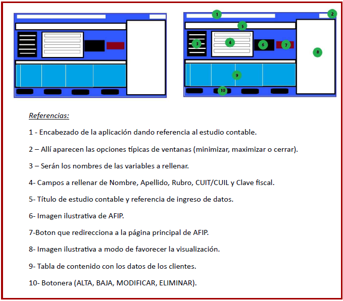La plicación lograda es una aplicación realizada con Python con el apoyo de la base de datos Sqlite3 y ademas la ulización de Tkinter. La idea de esta aplicación es el facilitar los datos de inicio de sesión a la cuenta correspondiente de cada cliente en AFIP, teniendo la posibilidad de ingresar o redirigirse desde la aplicación misma, llevando un control también de los clientes. La aplicación permite la carga del cliente y poder observar los siguientes datos:
Nombre.
Apellido.
Rubro o Oficio.
CUIT/CUIL.
Clave fiscal.
Pudiendo interactuar con los mismos, a continuación, veremos cómo se visualiza.
Aquí podemos ver la aplicación y su ventana terminada como se lo había diseñado previamente, buscando una armonía de colores y de fácil entendimiento para el usuario que ulice la misma.
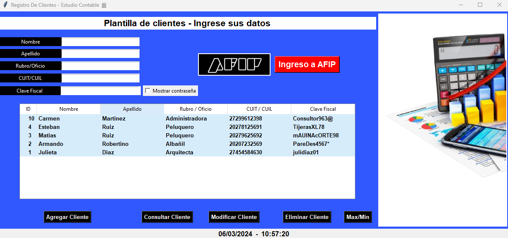Presenta el tular como habíamos dicho, donde allí podría ir el nombre del estudio contable, y las opciones correspondientes a minimizar, maximizar o cerrar la misma.
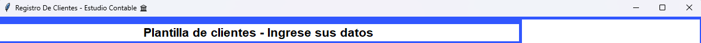Podemos ver el tulo con su instrucción, siguiendo hacia la izquierda las variables que participan para el llenado de los campos vacíos que nombramos con anterioridad, y los campos para que el usuario pueda cargar un nuevo cliente.
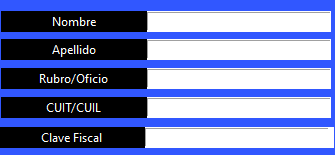Posee un método de seguridad para colocar la contraseña asi se posee privacidad.
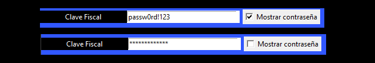Luego yendo hacia la derecha podemos ver el logo de AFIP como se había pensado, con un botón que llame la atención de fácil acceso que redirige al usuario hacia la pagina principal de AFIP si lo desea.
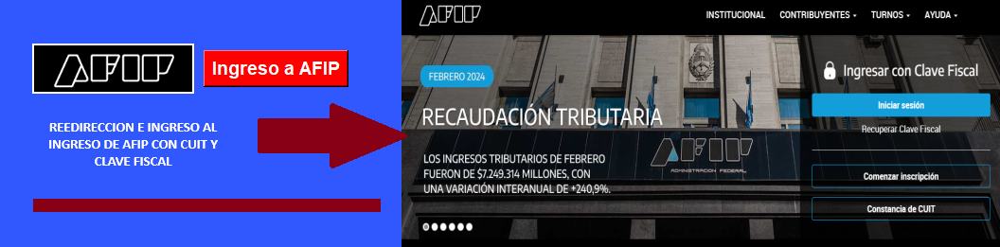Un poco mas hacia la derecha encontramos nuestra imagen ilustrava que complementa nuestra aplicación, dando una mejor visualización y tamaño a la misma. Además es la imagen que une todo el contexto de la aplicación de manera que concatena con la carga de datos y la tabla con los clientes del estudio contable. Se uliza el azul de fondo y de contraste para la tabla y los datos ya llenados un celeste más claro cómo se puede apreciar.
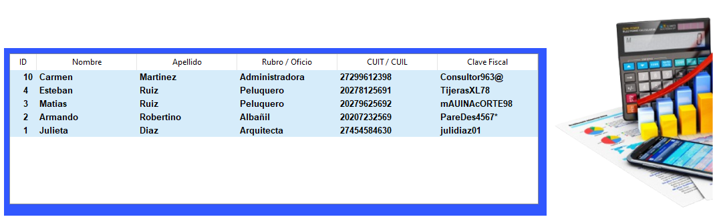Por úlmo encontramos la botonera personalizada que se decidió darles un color negro con letras blancas, formato también de las variables, donde allí podrá el usuario interactuar y dar las disntas órdenes.
Admeas se añadio la fecha y hora.
Las ordenes son:
Agregar Cliente: Se debe completar todos los casilleros correspondientes y luego clic
en dicho botón para cargarlos en la base de datos. En caso de error saldrá ventana emergente, al igual que si se cargó con éxito.
Consulta Cliente: Selecciona el cliente en la planilla y al poner consultar lo tendrá
presente en los campos a rellenar.
Modificar Cliente: Seleccionado el cliente, podrá reemplazar o modificar algún cliente
que se ha cargado erróneamente.
Eliminar Cliente: Borra el cliente de la planilla correspondiente a la base de datos.
Maximizar o minimizar: Lo que realiza es Maximizar o minimizar la ventana para que se
lean o no los datos correspondientes a otros clientes, ocultándolos.
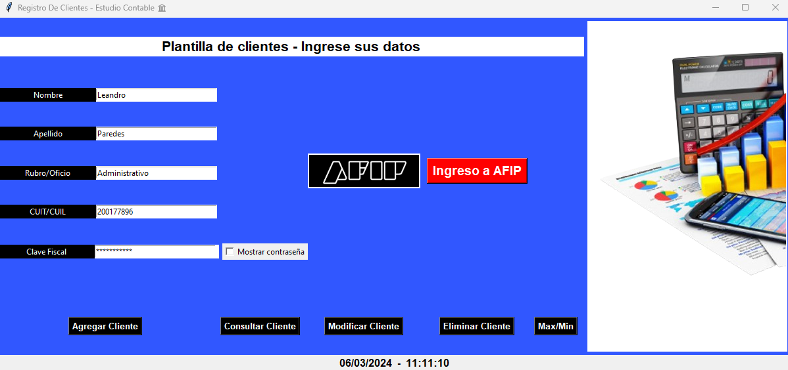Podemos ver en las siguientes capturas nos permite poder consultar la base de datos si lo requerimos, y si queremos la minimizamos para que otro no vea esa información sensible.
Algunas de las ventanas emergentes configuradas podemos observar en los siguientes casos:
No se cargo uno o ninguno de los datos, pide que los complete.
Cuando queremos eliminar un cliente, nos pregunta si realmente queremos borrarlo o
nos equivocamos. En caso de no seleccionar el cliente a eliminar te avisa ya sea para eliminar o modificar.
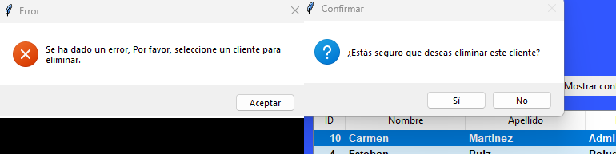 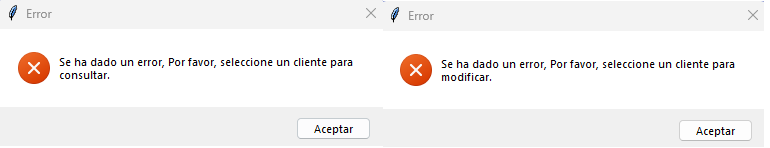Ademas si desea modificarlo el mismo pregunta.
A manera orientava se la aplicación realizada, se trato de aplicar los conocimientos que se han dado a lo largo de la cursad en el curso de Python incial. Se baso un orden en el que va de la siguiente manera:
MODULOS IMPORTADOS
MODELO / FUNCIONES
VISTAS (TREEVIEW y BOTONERA)
CONTROLADOR
Cada una de estas partes muy importantes para la realización de la misma, y que permieron que pueda seguir un camino.
Se destaca el uso de base de datos Sqlite3 y del ORM peewee.
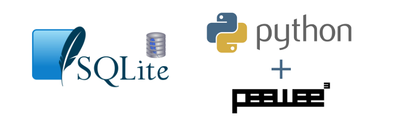Se destaca la implementacion de un historial de errores (errores.txt) y tambien de secuencias realizadas con exito por el usuario (root.txt).
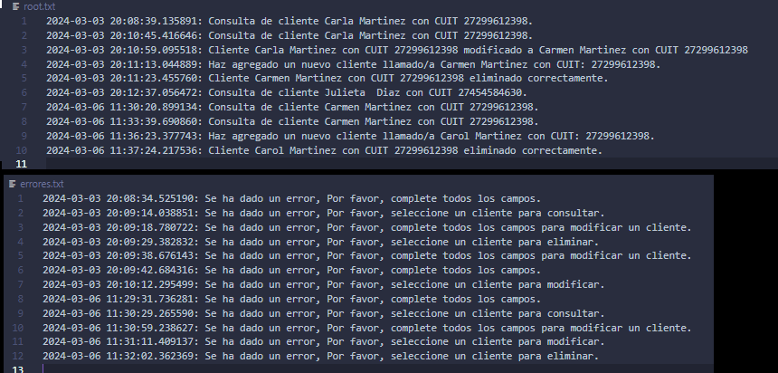Basadoes entonces en nuestro modelo MVC pasamos a ver cada uno de ellos….